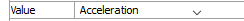
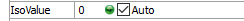
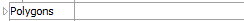
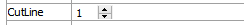

等值面绘图项
说明
以等值面显示的网格单元数值数据。
属性
数值（Value） 后接各种变化的内容 等值数值（IsoValue） 按…着色（Color-By） 后接各种变化的内容 颜色列表（Color-List） 多边形（Polygons） 切割线（Cut-Line） 隐藏空单元（Hide-Null） 映射（Map） 变形系数（Def-fac） 透明度（Transparency） 图例（Legend）
值

选择要显示的网格单元数值。将根据需要提供附加属性字段；下表中对这些字段作了说明。
| 加速度ᶜ | 附加ᵉᵘʷ | 孔隙压力ʷ | 应力-强度比ᵐ |
| 条件ᵐ | 流体 Biot 模量 | 特性ᵖᵐ | 目标力比 |
| 收敛 | 流体体积模量 | 饱和度 | 温度 |
| 密度ᵐ | 流体密度ᵐ | 应变增量ʸ | 热学特性ᵖᵐ |
| 位移ᶜ | 流体特性ᵖ | 应变率ʸ | 不平衡力ᶜ |
| 动力时间步 | 局部力比 | 应力ᶻ | 速度ᶜ |
| 有效应力ᶻ | 乘数 |
| 图例说明： |
| ᴸ所有数值都提供“对数”属性 |
| ᶜ其后跟随一个“分量”属性 |
| ᵉ其后跟随一个“附加”属性 |
| ᵐ其后跟随一个“方法”属性 |
| ᵖ其后跟随一个“特性”属性 |
| ᵘ其后跟随一个“类型”属性 |
| ʷ其后跟随一个“来源”属性 |
| ʸ其后跟随“分量”和“方法”属性 |
| ᶻ其后跟随“分量”、“应力”和“方法”属性 |
等值数值

执行 XXXX。
等值数值：若勾选“自动”，则自动计算 xxxx。若未勾选，则手动指定 xxxxxx。如果更改了手动设置，请在指定更改后按“执行”按钮，以重新生成绘图。
按…着色
| 密度 | 乘数 |
| 额外变量ᵉ | 特性ᵖ |
| 流体密度 | 状态ᵗ |
| 流体特性ᵖ | 热学特性ᵖ |
| 分组ˢ | 类型 |
| 模型 | 均匀 |
| 图例说明： |
| ᵉ其后跟随一个“附加”属性 |
| ᵖ其后跟随一个“特性”属性 |
| ˢ其后跟随一个“槽位”属性 |
| ᵗ其后跟随一个“状态依据”属性 |
颜色列表

设置用于项目颜色列表的线的属性。详情请参见标准的 颜色列表（color-list） 控件说明。
多边形

设置项目面片的属性。详情请参见标准的 多边形（polygons） 控件说明。

切割线
设置用于项目切线的线的属性。详情请参见标准的 切割线（cut-line） 控件说明。
隐藏空单元

不在绘图中显示空项。详情请参见标准的 隐藏空单元（hide-null） 控件说明。
映射

将该项映射到新的模型坐标。详情请参见标准的 映射（map） 控件说明。
变形系数

设置变形系数。详情请参见标准的 变形系数（def-fac） 控件说明。
透明度

设置绘图项的透明度。详情请参见标准的 透明度（transparency） 控件说明。
图例

设置绘图图例中该项目的标签。详情请参见标准的 图例（legend） 控件说明。
在 标题 下方，等值面绘图项还在 图例 中为 数量、颜色列表、映射 和 变形系数 提供控件。
| 这些内容对您有帮助吗？… 版权与免责声明 |
FLAC3D © 2019, Itasca | 原文更新于 2020 年 10 月 8 日 |